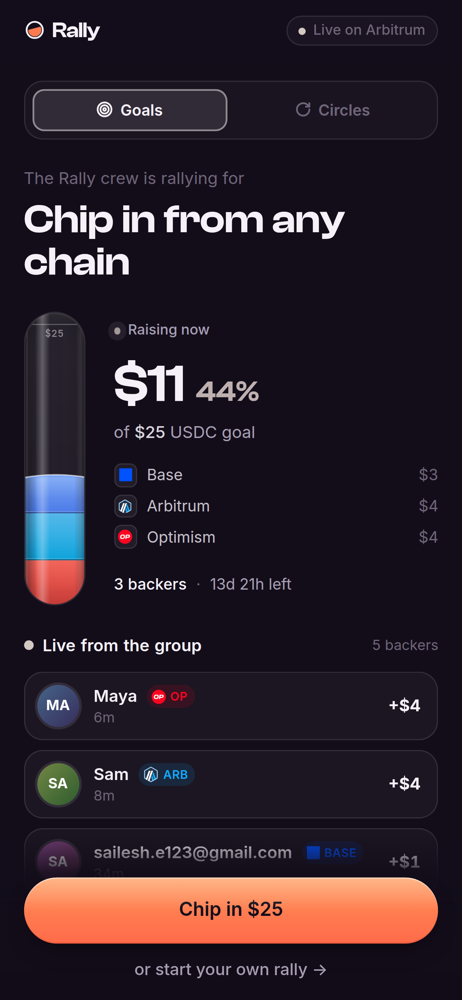

/c/9 · Base + Arbitrum + Optimism
Rally
01 / 08
Each color on the bar is a source chain.
The pot is a contract. If the goal hits, it pays out. If it misses, anyone can refund.


 Circle CCTP
Circle CCTP
 Arbitrum
Arbitrum
 Optimism
Optimism
 Base
Base
Point at the bar. Each color is a source chain the USDC actually came from. Do not explain the stack.

[ write path ]05 / 08
What runs after Chip in.
[ write path ]
EIP-7702
loginWithEmailOTP then a type-4 sign7702Authorization. Same address.
Kernel UserOp
Sponsoring paymaster on Base, OP, and Arb Sepolia. Approve, burn, contribute, claim, refund.
CCTP v2
Domains 6 / 2 → 3
depositForBurn → Iris (fast) → receiveMessage. Dest is always Arbitrum.
Arbitrum
Two vaults
recordContribution(sourceDomain) colors the bar. refundFor is permissionless.
[ UnattributedFunds ]
// GoalVault — the relayer can only attribute USDC that already arrived if (token.balanceOf(address(this)) < totalEscrowed + amount) revert UnattributedFunds(); _credit(campaignId, backer, amount, sourceDomain);
Judge slide. If asked SRA: we use 7702 + paymaster, not Smart Routing Addresses. Honest. RotatingVault has no owner — nobody can touch escrowed funds but their owners.